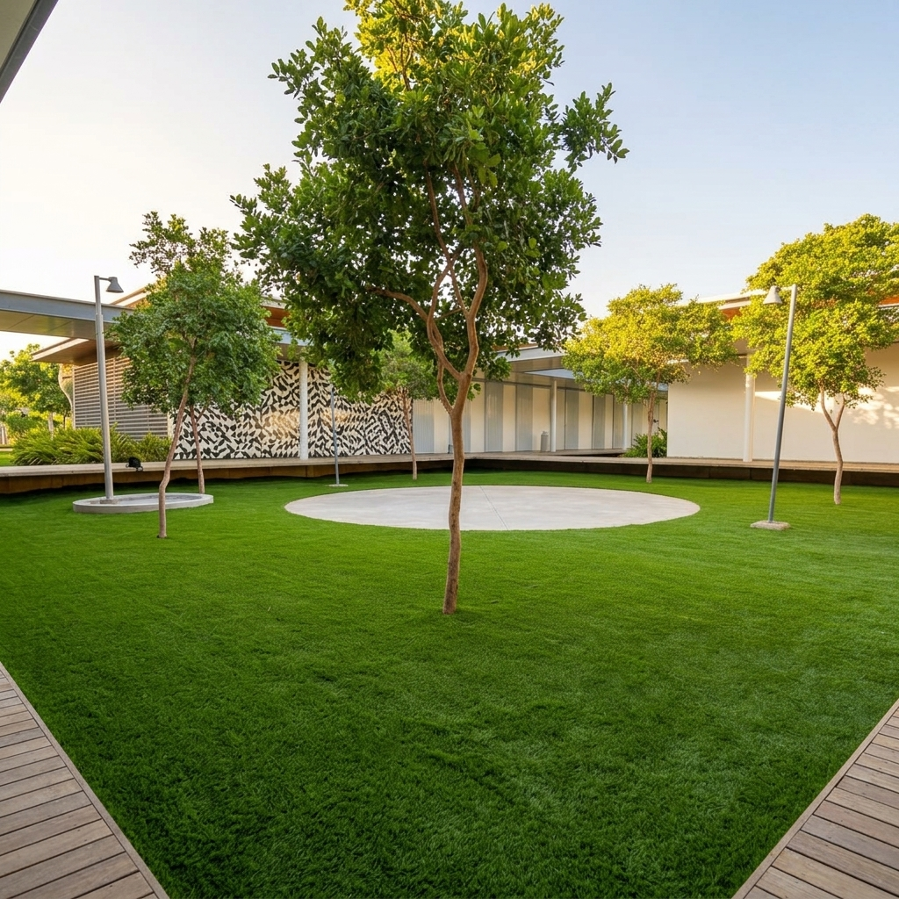

Fornecemos e instalamos revestimentos residenciais e esportivos premium. Da grama sintética super realista ao piso emborrachado de alta absorção de impacto.
Conheça nossa variedade de revestimentos de alta performance. Clique no botão abaixo para explorar o catálogo completo com especificações técnicas e fotos reais.
A Siciliano Grama Sintética é referência em qualidade desde a escolha do material até a entrega final com garantia.
Gramas e pisos fáceis de higienizar que não retêm odores e são completamente atóxicos para animais.
Nossos revestimentos recebem tratamento térmico para reter menos calor e aditivo UV contra desbotamento solar.
Garantimos cortes cirúrgicos, costura firme de gramados e perfeita colagem das juntas no seu contrapiso.
Materiais projetados com polímeros e compostos reforçados para suportar alto tráfego físico e intempéries por anos.
Revestimentos atóxicos, antiderrapantes e com excelente amortecimento físico, protegendo contra quedas bruscas.
Canais rápidos e suporte técnico para esclarecimento de dúvidas, manutenção posterior ou orientações de limpeza.
Solicite um orçamento sem compromisso e receba o atendimento personalizado com nossa equipe de engenharia e instalação.
Precisa de ajuda rápida? Separamos as dúvidas mais recorrentes de nossos clientes.